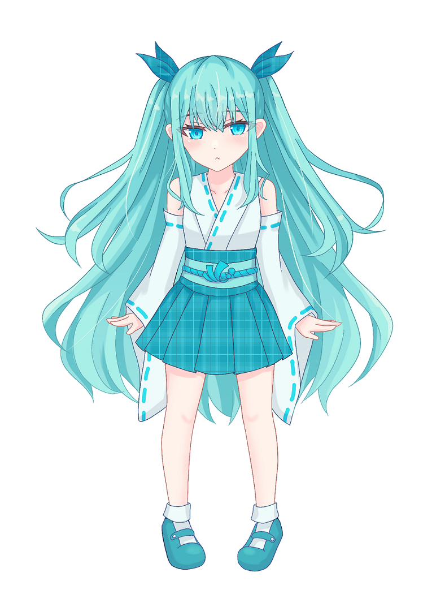
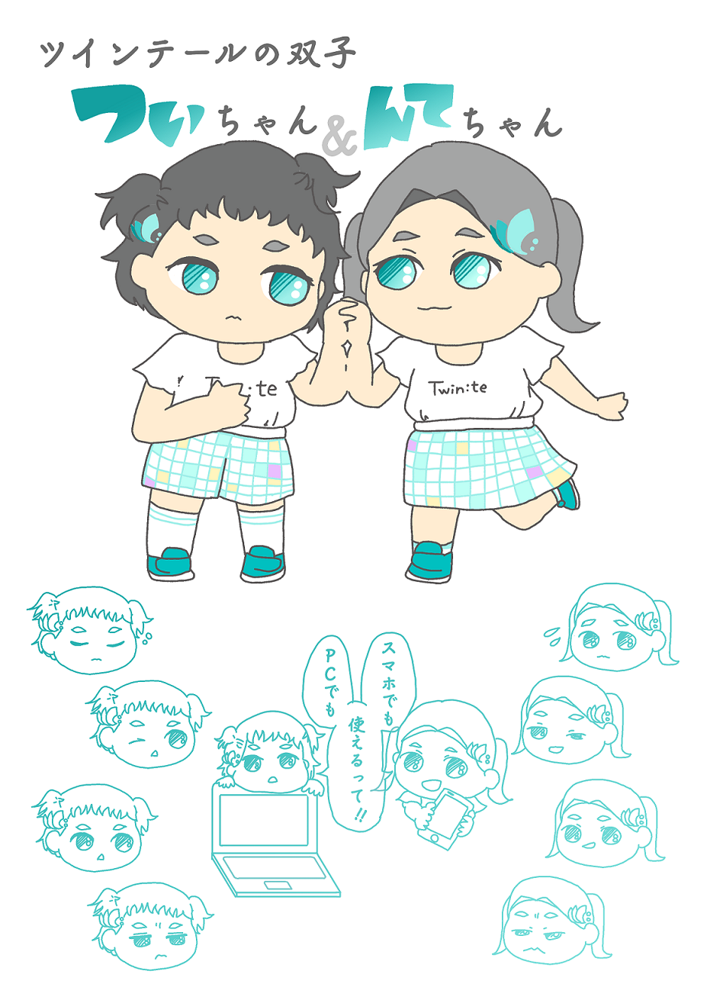
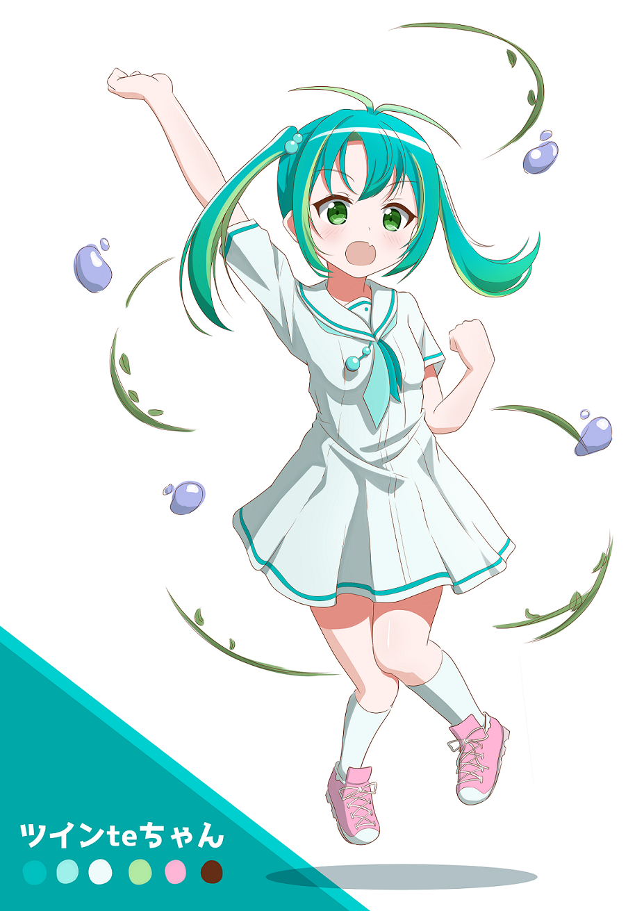
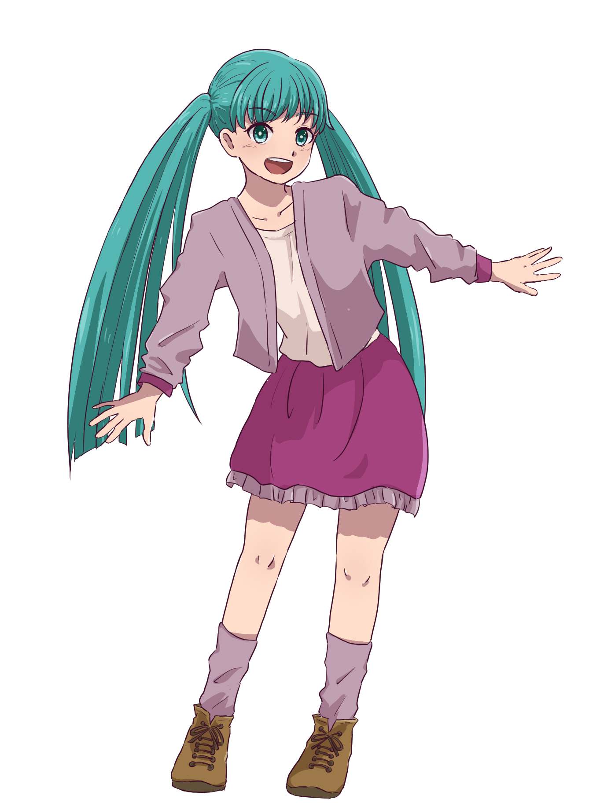
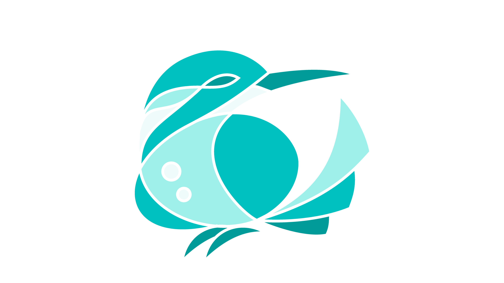

マスコットキャラクター
投票ページ
以下のマスコットキャラクターは一次審査を通過いたしましたのでお知らせします。
また、二次審査はGoogleフォーム・Twitterによる投票によって受け付けますので、皆さんの投票をお待ちしております。
投票・集計の仕方
Twitterでの得票数の70% + Googleフォームでの得票数
という計算式によって一番得票数が多かった人の作品が公式マスコットキャラクターに選ばれます。
Googleフォームはこちら。
Twin:te公式Twitterはこちら。
なお、TwitterとGoogleフォームによる投票は、各プラットフォームで1人1票ずつでお願いします。
締め切りは10月31日（土）11月14日（土）です。
10/2 追記
Twitterでの投票はなくなりました。 代わりにGoogleフォームによる投票の締め切りが11月14日までになりました。
マスコットキャラクター一覧（応募順）
1. 「とうぃんてちゃん」
{kind=link}
ペンネーム
ぴゃ
キャラクターに込めた思い
髪飾りとスカートのチェック柄でcoinsを表現、 和風な服装で、筑波大学の歴史の長さを表現、 洋風な髪型と靴でImagine The Futureを表現、 帯飾りと色でTwin:teを表現しました！ とうぃんてちゃんには、みんなから愛される子になってほしい！
2. ついちゃん＆んてちゃん
{kind=link}
ペンネーム
ほーぼ
キャラクターに込めた思い
かわいいです。
3. ツインteちゃん
{kind=link}
ペンネーム
はずむ
キャラクターに込めた思い
・ロゴ形から葉っぱ・水玉
・新しいアプリでフレッシュな感じ
・筑波大の自然
これらの要素を、フレッシュさ・みずみずしさあふれる
元気いっぱいな女の子として表現しました。
カラーリングや胸元のリボンはTwin:teのロゴを彷彿とさせます。
4. ツインテちゃん
{kind=link}
ペンネーム
たが
キャラクターに込めた思い
明るく元気に筑波大生の時間割管理のお手伝いをしてくれる女の子をイメージして描きました。 髪はツインテアプリのアイコンを意識した髪型にしました。（今回は描けなかったのですが、ミニキャラにするともっとアイコンのような形に近くなります） 履修管理のこと以外はパッパラパーなのですが、何事にも全力で取り組む愛嬌のある女の子です。
5. コロン
{kind=link}
詳細資料はこちら[PDF]
ペンネーム
2-HEY
キャラクターに込めた思い
私が筑波大生となって以来ずっと登校制限がされている中、一度だけ門を跨いだ際に遭遇してとても印象的だったカワセミをモデルに、この"コロン"を生み出しました。「またもう一度大学に訪れてカワセミを見てみたい」という一新入生としての願いをこのキャラクターに込めました。 「Twin:te」さんのスタイリッシュさを引き立たせるフラットなデザインとし、カラーユニバーサルデザインに優れた、UIの基本色のみで構成しました。